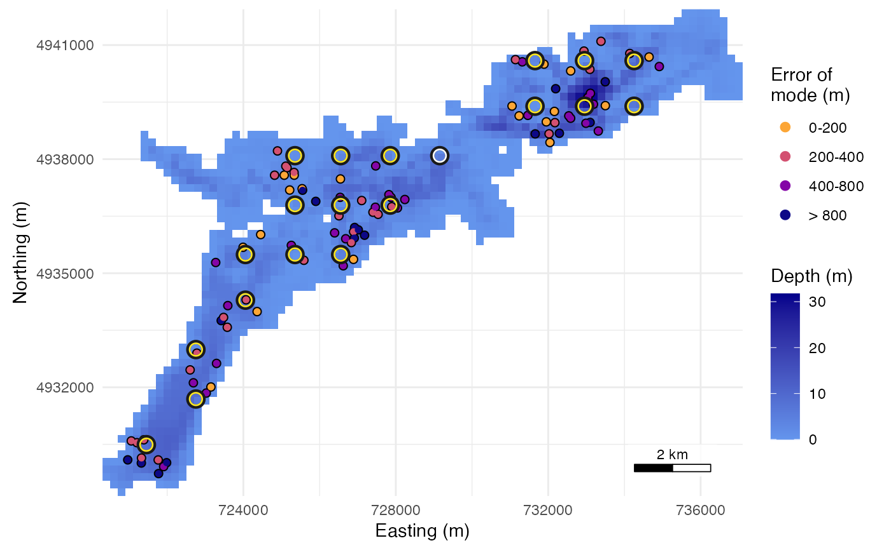

Map the positioning error of an array evaluation
plot.array_evaluation.RdDraws the water by depth on detfield::scale_fill_depth(), land blank,
the receivers that heard the simulated animals as yellow rings and those
that heard none as white rings, each over a dark ring, and one point per scored
animal-hour at the centroid of the animal's true positions in the hour,
coloured by the error class of the location surface's mean (or mode) and
edged in black. The keys give the error classes and the depth in metres.
Arguments
- x
An
array_evaluationfromevaluate_array().- error
"mean"or"mode": which point estimate's error to draw.- breaks
Class limits of the error in metres: at least 2 finite numbers in increasing order. The last class is open. When the first limit is above 0, the errors below it form a class of their own, so every animal-hour is drawn in the class that holds its error.
- legend
Whether to draw the keys of the error classes and of the depth to the right of the map.
- ...
Not used. Add ggplot2 layers, scales or
ggplot2::theme()settings to the plot this method returns instead.
Details
The plot's data hold the scored animal-hours and the receivers, one row
each, told apart by the column what; n_detections holds the detections
of each receiver over the run. To map several evaluations of one
lake side by side, bind their data with a column that names each, replace
the data with ggplot2::%+%, and facet by that column.
Examples
# 20 animals for 6 hours on the 20 planned stations, with the depth raster
# averaged to 200 m cells to keep the example short.
stoney <- terra::rast(system.file("extdata", "stoney_depth.tif",
package = "arraydesign"))
stoney_200 <- terra::aggregate(stoney, 2, na.rm = TRUE)
planned <- read.csv(system.file("extdata", "planned_stations.csv",
package = "arraydesign"))
rx <- place_receivers(stoney_200, method = "manual", coords = planned)
range_model <- detfield::de_logistic(d50 = c(250, 750), d05 = c(500, 1500),
depth = c(1, 35))
ev <- evaluate_array(rx, stoney_200, range_model, n_animals = 20, seed = 1,
control = list(hours = 6, tag_delay = c(120, 180)))
plot(ev)
 # The error of the surface mode instead of the mean.
plot(ev, error = "mode")
# The error of the surface mode instead of the mean.
plot(ev, error = "mode")
